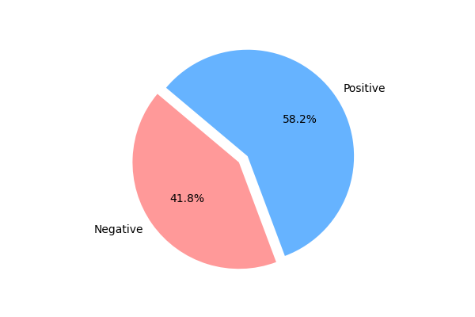

2600
Patient Dataset
4
X Ray Types
92%
Accuracy
4
Algorithms

Tuberculosis- Prediction
A pandemic is an outbreak of a disease globally affecting many populations. The world has witnessed many pandemics in the 20th century. Flu viruses are the major cause of pandemics. These viruses show changing behaviour with the changing seasons and thus their behaviour needs to be predicted for preventions.
- Image pre-processing
- Image Segmentations
- Depthwise Convolution Network
- Tuberculosis- Prediction
The X-ray that you uploaded

This is a {{ pred }} case of Tuberculosis
{% if pred == 'Positive' %}
Stage of Tuberculosis

Suggested Doctors
{% endif %}About